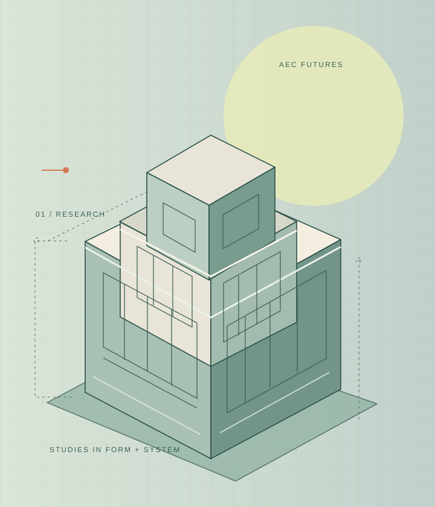
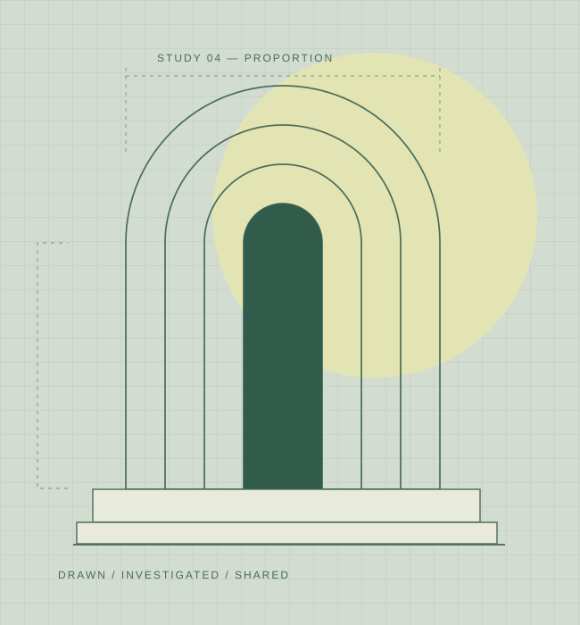

Better futures
are built together.
ARQWELL brings architecture research, practical learning resources, and funding intelligence into one connected place for the people shaping our built environment.

Get closer to your next opportunity.
ARQWELL Funding Intelligence organizes grants, fellowships, project funding and selected AEC opportunities in a searchable database, with a curated monthly briefing for subscribed businesses.
New connections. New possibilities.
Meet ARQWELL’s new online home for architecture, research, learning, and opportunity—with four connected library catalogs and live federal grant discovery.
Read our website launch story ↗Everything we build
starts with access.
Separate spaces, connected through one ARQWELL membership and a shared commitment to the AEC community.
The ArqLib Library
A living collection of architecture books, podcasts, archival artifacts and research material.
Browse the collection ↗02 / FUNDINGFunding Intelligence
A curated grants and funding database, with a paid monthly briefing for businesses.
See funding access ↗03 / PEOPLEThe Career Network
Employer partnerships, architectural talent, workforce development and career services on arqwell.net.
Explore arqwell.net ↗
A laboratory of ideas.
A library of knowledge.
ArqLib is ARQWELL's research and knowledge lab. It brings together the material we learn from and the ideas we are testing—from historical drawings and public-domain books to conversations about today's built environment.
Featured across ARQWELL
Rotating books, podcasts, artifacts, research and funding selected by our editors or scheduled automatically.
Ideas shaping the future of design.
The ARQWELL Journal · Design and AEC industry perspectives
Explore new perspectives on architecture, engineering, construction, technology and the people shaping our built environment. Our journal examines how design evolves—from everyday practice to emerging ideas and industry change.
Learn together.
Build further.
Live architecture, research, technology and professional learning sessions. Some gatherings are free; guided workshops may have a registration fee.
See the learning calendar ↗Knowledge grows
when it circulates.
We welcome architects, educators, libraries, publications, manufacturers and researchers who want to share approved materials or collaborate on meaningful AEC learning and research.
Books, approved talks, tutorials and resources.
Research partnerships and joint development.
Practical educational resources for the industry.
Better access to tools, ideas, and networks.
Not just a collection of resources. A place to put knowledge to work.ARQWELL / PROJECT VISION